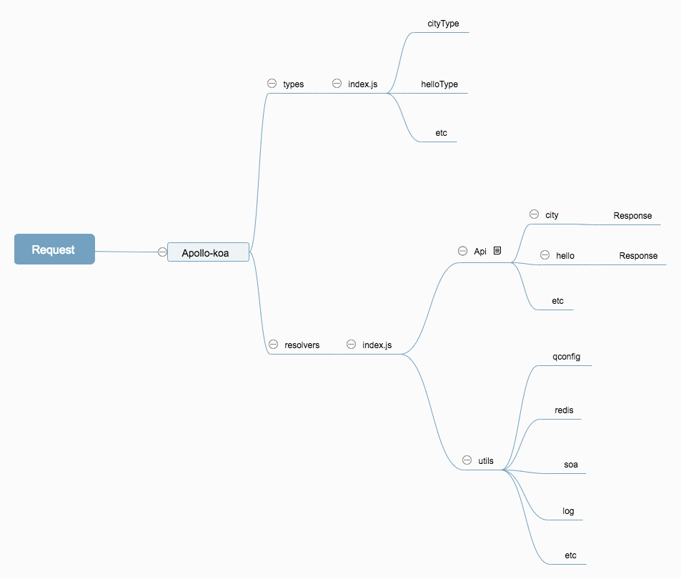

oneQL
Use koa + apollo-server-koa
book: (https://skyweaver213.github.io/oneQL/book/)


快速开始
- clone模板仓库 (后续考虑cli创建)
- npm install
npm run dev
query db($key: String, $ext: [ExtensionType]){
hello
city(request: {key: $key, ext: $ext } ) {
datainfo{
CountryId
country
type
}
}
}
QUERY VARIABLES
{"key":"D", "ext": [{ "key":"2", "value":"1"}] }

query simple{
seatSimple {
resultList{
fInfo{
fNo
}
}
}
}
开发建议
- 一个请求可以带多个schema，对应请求逻辑是resolvers文件夹下index.js, connect所有resolvers
- 每一个最外层schema分一个对应的types文件和一个resolvers文件
- types文件夹下index.js , connect所有types
- 每一个schema具体数据实现，如果涉及请求，建议api文件夹里建一个文件处理逻辑
Util 功能
- util提供了soa请求封装，如自动处理埋点信息；
- 提供xconfig集成；
- 提供redis方法集成
- 提供log方法集成
生产模式
- 需要关闭graphlQL 调试工具
- 根据package.json , env变量 判断prod 或者只dev和fat环境开启
const server = new ApolloServer({
typeDefs,
// mocks
resolvers
// playground: false // false为关闭
})
思维图
